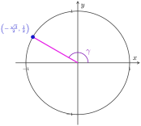
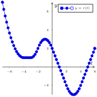
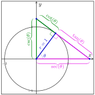
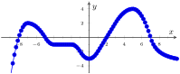

1.
What does "CHOSHACAO" stand for? See Right Angle Trigonometry Definitions .
http://tiny.cc/111Z-Textbook

| \(\theta\) | \(\quad 0 \quad\) | \(\quad\frac{5\pi}{6}\quad\) | \(\quad\frac{\pi}{4}\quad\) | \(\quad\frac{4\pi}{3}\quad\) | \(\quad\frac{\pi}{2}\quad\) |
|---|---|---|---|---|---|
| \(\sin(\theta)\) | \(\qquad\) | \(\qquad\) | \(\qquad\) | \(\qquad\) | \(\qquad\) |
| \(\cos(\theta)\) | \(\qquad\) | \(\qquad\) | \(\qquad\) | \(\qquad\) | \(\qquad\) |
| \(\csc(\theta)\) | \(\qquad\) | \(\qquad\) | \(\qquad\) | \(\qquad\) | \(\qquad\) |
| \(\sec(\theta)\) | \(\qquad\) | \(\qquad\) | \(\qquad\) | \(\qquad\) | \(\qquad\) |
| \(\tan(\theta)\) | \(\qquad\) | \(\qquad\) | \(\qquad\) | \(\qquad\) | \(\qquad\) |
| \(\cot(\theta)\) | \(\qquad\) | \(\qquad\) | \(\qquad\) | \(\qquad\) | \(\qquad\) |

